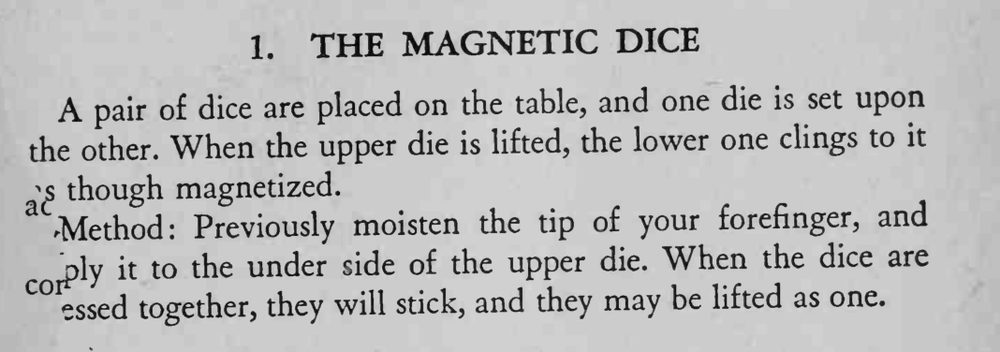

一枚骰子叠在另一枚上，提起上面那枚时，下面那枚像被磁化了一样跟着一起起来。
水只要一点点，骰面压实时不要太用力，免得水被挤出来。

A pair of dice are placed on the table, and one die is set upon the other. When the upper die is lifted, the lower one clings to it;s though magnetized. a ^Method: Previously moisten the tip of your forefinger, and to the under side of the upper die. When the dice are CO "ply it essed together, they will stick, and they may be lifted as one.